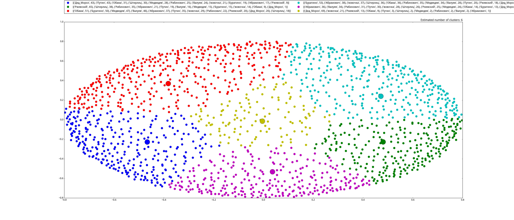

После прочтения некоторого количества статей выяснилось, что анекдоты служат материалом для очень многих работ.
Например:
и другие.
Прежде всего, необходимо было собрать корпус анекдотов, имеющий разметку по персонажам.
Сайт, с которого скачивались анекдоты.
Почему именно этот сайт?
| Персонаж | Количество анекдотов | Персонаж | Количество анекдотов |
| Абрамович | 152 | Дед Мороз | 273 |
| Штирлиц | 152 | Рабинович | 539 |
| Валуев | 164 | Медведев | 557 |
| Обама | 166 | Вовочка | 1146 |
| Буратино | 168 | Путин | 1187 |
| Ржевский | 231 |
Как видно, количество анекдотов довольно сильно варьируется в зависимости от персонажа. Именно поэтому мы введем понятия "полная выборка" и "уменьшенная выборка". "Уменьшенная выборка" будет включать в себя по 150 анекдотов от каждого персонажа.
Mystem, с помощью которого связные тексты анекдотов были преобразованы в наборы лемм.
Что умеет делать:
Для векторизации и кластеризации понадобилась библиотека scikit-learn.
Мы использовали три метода кластеризации: KMeans, Meanshift, DBSCAN.
KMeans: стремится минимизировать суммарное квадратичное отклонение точек кластеров от центров этих кластеров. Необходимо указать количество кластеров.
MeanShift: ищет центроиды, формирует кластеры вокруг них.
DBSCAN: считает кластерами большие скопления точек, области высокой плотности. Точки, не попавшие в кластеры, помечает как шум. Требует большого объема данных; при использовании уменьшенной выборки кластеров не выделял.
Для визуализации была использована библиотека matplotlib.
Результаты работы алгоритма KMeans:
Уменьшенная выборка, 6 кластеров:
Уменьшенная выборка, 11 кластеров:
Полная выборка, 6 кластеров:
Полная выборка, 11 кластеров:
Результаты работы алгоритма MeanShift:
Уменьшенная выборка:
Полная выборка:
Результаты работы алгоритма DBSCAN:
Полная выборка:
Огромная черная точка - весь собранный шум.
Использованная литература:
Код находится здесь.
Файл с постером.